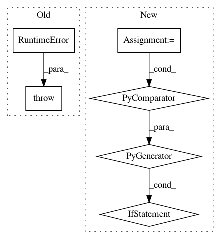

6f9d9f18865ac204c93c61029ec9efb129869709,sos/sos_step.py,Base_Step_Executor,expand_depends_files,#Base_Step_Executor#,267
Before Change
ret:
Return a file list or Undetermined.
"""
raise RuntimeError("Undefined virtual function.")
def expand_output_files(self, value, *args):
"""Process output files (perhaps a pattern) to determine input files.
"""
After Change
def expand_depends_files(self, *args, **kwargs):
"""handle directive depends"""
if self.run_mode == "dryrun" and any(isinstance(x, dynamic) for x in args):
for k in args:
if isinstance(k, dynamic):
env.logger.warning("Dependent target {} is dynamic".format(k))
return Undetermined()
args = [x.resolve() if isinstance(x, dynamic) else x for x in args]
return _expand_file_list(False, *args)
def expand_output_files(self, value, *args):
In pattern: SUPERPATTERN
Frequency: 3
Non-data size: 6
Instances
Project Name: vatlab/SoS
Commit Name: 6f9d9f18865ac204c93c61029ec9efb129869709
Time: 2017-03-03
Author: ben.bog@gmail.com
File Name: sos/sos_step.py
Class Name: Base_Step_Executor
Method Name: expand_depends_files
Project Name: bokeh/bokeh
Commit Name: 8451d9c3690f1d47adcb929771b4ce37ea2c3e0d
Time: 2017-09-01
Author: mattpap@gmail.com
File Name: bokeh/util/compiler.py
Class Name:
Method Name: _detect_nodejs
Project Name: vatlab/SoS
Commit Name: 6f9d9f18865ac204c93c61029ec9efb129869709
Time: 2017-03-03
Author: ben.bog@gmail.com
File Name: sos/sos_step.py
Class Name: Base_Step_Executor
Method Name: expand_input_files